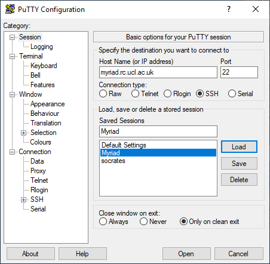

How do I?§
I have an account, now:
How do I log in?§
Logging in is most straightforward if you are inside the UCL firewall. If you are logging in from home or other external networks then you first have to get on to the UCL network.
Linux / Unix / macOS§
Use the terminal and type the below command to secure shell (ssh) into the machine you wish to access. Replace <your_UCL_user_id> with your central UCL username, and <system_name> with the name of the machine you want to log in to, eg. myriad, kathleen, aristotle.
ssh <your_UCL_user_id>@<system_name>.rc.ucl.ac.uk
Windows§
On Windows you need something that will give you a suitable terminal and ssh - usually PuTTY, or
on Windows 10 you can use OpenSSH from a command prompt and type the same ssh command as the
Linux instructions.
Using PuTTY§
PuTTY is a common SSH client on Windows and is available on Desktop@UCL. You can find it under:
Start > P > PuTTY 0.76 (64-bit) > PuTTY 0.76 or type "putty" in the toolbar's search box.
You will need to create an entry for the host you are connecting to with the settings below. If you want to save your settings, give them an easily-identifiable name in the "Saved Sessions" box and press "Save". Then you can select it and "Load" next time you use PuTTY.

You will then be asked to enter your username and password. Only enter your username, not @<system_name>.rc.ucl.ac.uk. The password field will remain entirely blank when you type in to it - it does not show placeholders to indicate you have typed something.
The first time you log in to a new server, you'll get a popup telling you that the server's host key is not cached in the registry - this is normal and is because you have never connected to this server before. If you want to, you can check the host fingerprint against our current key fingerprints.
Logging in from outside the UCL firewall§
You will need to either use the UCL Virtual Private Network or ssh in to UCL's Gateway system ssh-gateway.ucl.ac.uk first. From there you can then ssh in to our systems.
ssh <your_UCL_user_id>@ssh-gateway.ucl.ac.uk
ssh <your_UCL_user_id>@<system_name>.rc.ucl.ac.uk
Advanced: If you find you need to go via the Gateway often, you can set up this jump automatically, see Single-step logins using tunnelling
Login problems§
If you experience difficulties with your login, please make sure that you are typing your UCL user ID and your password correctly. If you have recently updated your password, it takes some hours to propagate to all UCL systems.
If you still cannot get access but can access other UCL services like the SSH Gateway, please contact us on rc-support@ucl.ac.uk. Your account may have expired, or you may have gone over quota.
If you cannot access anything, please see UCL MyAccount - you may need to request a password reset from the Service Desk.
If you get a host key error message, you will need to delete old host keys - continue reading!
Remote host identification has changed§
When you log in via SSH, it keeps a record of the host key for the server you logged in to in
your .ssh/known_hosts file in your home directory, on the machine you are logging in from.
This helps make sure you are connecting directly to the server you think you are, but can cause
warnings to show up if the host key on that machine has genuinely changed (usually because of an
update or reinstall).
Check the host key warning against our current key fingerprints:
The error message looks like this if you are using OpenSSH in a terminal:
@@@@@@@@@@@@@@@@@@@@@@@@@@@@@@@@@@@@@@@@@@@@@@@@@@@@@@@@@@@
@ WARNING: REMOTE HOST IDENTIFICATION HAS CHANGED! @
@@@@@@@@@@@@@@@@@@@@@@@@@@@@@@@@@@@@@@@@@@@@@@@@@@@@@@@@@@@
IT IS POSSIBLE THAT SOMEONE IS DOING SOMETHING NASTY!
Someone could be eavesdropping on you right now (man-in-the-middle attack)!
It is also possible that a host key has just been changed.
The fingerprint for the ECDSA key sent by the remote host is
SHA256:7FTryal3mIhWr9CqM3EPPeXsfezNk8Mm8HPCCAGXiIA.
Please contact your system administrator.
Add correct host key in /Users/uccaxxx/.ssh/known_hosts to get rid of this message.
Offending ECDSA key in /Users/uccaxxx/.ssh/known_hosts:11
ECDSA host key for myriad.rc.ucl.ac.uk has changed and you have requested strict checking.
Host key verification failed.
Killed by signal 1.
This tells you that the old key is in line 11 of your known_hosts file.
Sometimes it will give you a direct command you can run to remove that specific key:
ssh-keygen -R myriad.rc.ucl.ac.uk
or you can manually delete line 11 yourself in a text editor.
If you are logging in via the Gateway, you will need to remove the old key there too. On the Gateway,
nano and vim are available text editors. If you are not already familiar
with vim, use nano - it has the command shortcuts shown at the bottom, where ^O means
press Ctrl and then the letter o.
# to open the file for editing in nano
nano ~/.ssh/known_hosts
Once you have removed the old host key you will be able to ssh in again. The first time you log in to an unknown server you will get a message like this:
The authenticity of host 'myriad.rc.ucl.ac.uk can't be established.
ECDSA key fingerprint is SHA256:7FTryal3mIhWr9CqM3EPPeXsfezNk8Mm8HPCCAGXiIA.
Are you sure you want to continue connecting (yes/no)?
Typing yes will allow you to continue logging in.
PuTTY will display a warning and you can choose to continue or not.
WinSCP will say Server's host key does not match the one that WinSCP has in cache.
and you will have the option to update the key.
macOS connection failures§
If you are on macOS and getting many ssh connection failures and broken pipe messages when trying to log in, try adding an ssh timeout to your ssh command:
ssh -o ConnectTimeout=10 <your_UCL_user_id>@myriad.rc.ucl.ac.uk
This has particularly been a problem with macOS Big Sur when using the VPN.
How do I log out?§
You can log out of the systems by typing exit and pressing enter.
(logout or pressing Ctrl+D also work)
How do I transfer data onto the system?§
You can transfer data to and from our systems using any program capable of using the Secure Copy (SCP) protocol. This uses the same SSH system as you use to log in to a command line session, but then transfers data over it. This means that if you can use SSH to connect to a system, you can usually use SCP to transfer files to it.
Copying files using Linux or macOS§
You can use the command-line utilities scp, sftp or rsync to copy your data about. You can also use a graphical client (Transmit, CyberDuck, FileZilla).
scp§
This will copy a data file from somewhere on your local machine to a specified location on the remote machine (Myriad etc).
scp <local_data_file> <remote_user_id>@<remote_hostname>:<remote_path>
# Example: copy myfile from your local current directory into Scratch on Myriad
scp myfile ccxxxxx@myriad.rc.ucl.ac.uk:~/Scratch/
This will do the reverse, copying from the remote machine to your local machine. (This is still run from your local machine).
scp <remote_user_id>@<remote_hostname>:<remote_path><remote_data_file> <local_path>
# Example: copy myfile from Myriad into the Backups directory in your local current directory
scp ccxxxxx@myriad.rc.ucl.ac.uk:~/Scratch/myfile Backups/
sftp§
You can use sftp to log in to the remote machine, navigate through directories and use put and get to copy files from and to your local machine. lcd and lls are local equivalents of cd and ls so you can navigate through your local directories as you go.
sftp <remote_user_id>@<remote_hostname>
cd <remote_path>
get <remote_file>
lcd <local_path>
put <local_file>
# Example: download a copy of file1 into your local current directory,
# change local directory and upload a copy of file2
sftp ccxxxxx@myriad.rc.ucl.ac.uk
cd Scratch/files
get file1
lcd ../files_to_upload
put file2
rsync§
rsync is used to remotely synchronise directories, so can be used to only copy files which have changed. Have a look at man rsync as there are many options.
Copying files using Windows and WinSCP§
WinSCP is a graphical client that you can use for scp or sftp.
- The login/create new session screen will open if this is the first time you are using WinSCP.
- You can choose SFTP or SCP as the file protocol. If you have an unstable connection with one, you may wish to try the other. SCP is probably generally better.
- Fill in the hostname of the machine you wish to connect to, your username and password.
- Click Save and give your settings a useful name.
- You'll then be shown your list of Stored sessions, which will have the one you just created.
- Select the session and click Login.
MobaXterm§
If using MobaXterm, you may need to set a password for the left side file manager panel separately as well as for the main panel, to allow you to drag and drop files and have them transferred to the cluster.
Transferring files from outside the UCL firewall§
As when logging in, when you are outside the UCL firewall you will need a method to connect inside it before you copy files.
You can use the UCL Virtual Private Network and scp direct to our systems or you can do some form of SSH tunnelling.
Single-step logins using tunnelling§
Linux / Unix / macOS§
On the command line§
# Log in to Myriad, jumping via the Gateway (replace ccxxxxx with your own username)
ssh -o ProxyJump=ccxxxxx@ssh-gateway.ucl.ac.uk ccxxxxx@myriad.rc.ucl.ac.uk
or
# Copy 'my_file' from the machine you are logged in to into your Scratch on Grace
# Replace ccxxxxx with your own username.
scp -o ProxyJump=ccxxxxx@ssh-gateway.ucl.ac.uk my_file ccxxxxx@myriad.rc.ucl.ac.uk:~/Scratch/
This tunnels through the Gateway in order to get you to your destination - you'll be asked for your password twice, once for each machine. You can use this to log in or to copy files.
You may also need to do this if you are trying to reach one cluster from another and there is a firewall in the way.
Using a config file§
You can create a config file which does this without you needing to type it every time.
Inside your ~/.ssh directory on your local machine, add the below to your config file (or create a file called config if you don't already have one).
Generally, it should be of this form where <name> can be anything you want to call this entry.
Host <name>
User <remote_user_id>
HostName <remote_hostname>
proxyCommand ssh -W <remote_hostname>:22 <remote_user_id>@ssh-gateway.ucl.ac.uk
This causes the commands you type in your client to be forwarded on over a secure channel to the specified remote host.
Here are some examples - you can have as many of these as you need in your config file.
Host myriad
User ccxxxxx
HostName myriad.rc.ucl.ac.uk
proxyCommand ssh -W myriad.rc.ucl.ac.uk:22 ccxxxxx@ssh-gateway.ucl.ac.uk
Host myriad12
User ccxxxxx
HostName login12.myriad.rc.ucl.ac.uk
proxyCommand ssh -W login12.myriad.rc.ucl.ac.uk:22 ccxxxxx@ssh-gateway.ucl.ac.uk
Host aristotle
User ccxxxxx
HostName aristotle.rc.ucl.ac.uk
proxyCommand ssh -W aristotle.rc.ucl.ac.uk:22 ccxxxxx@ssh-gateway.ucl.ac.uk
You can now just type ssh myriad or scp file1 aristotle:~ and you will go through the Gateway. You'll be asked for login details twice since you're logging in to two machines, a Gateway server and your endpoint.
Windows - WinSCP§
WinSCP can also set up SSH tunnels.
- Create a new session as before, and tick the Advanced options box in the bottom left corner.
- Select Connection > Tunnel from the left pane.
- Tick the Connect through SSH tunnel box and enter the hostname of the gateway you are tunnelling through, for example ssh-gateway.ucl.ac.uk
- Fill in your username and password for that host. (Central UCL ones for the Gateway).
- Select Session from the left pane and fill in the hostname you want to end up on after the tunnel.
- Fill in your username and password for that host and set the file protocol to SCP.
- Save your settings with a useful name.
Creating a tunnel that other applications can use§
Some applications do not read your SSH config file and also cannot set up tunnels themselves, but can use one that you have created separately. FileZilla in particular is something you may want to do this with to transfer your files directly to the clusters from outside UCL using a graphical client.
SSH tunnel creation using a terminal§
You can do this in Linux, macOS and the Windows Command Prompt on Windows 10 and later.
Set up a tunnel between a port on your local computer (this is using 3333 as it is unlikely to be in use, but you can pick different ones) to Myriad's port 22 (which is the standard port for ssh), going via a UCL gateway.
# replace ccxxxxx with your UCL username
ssh -L 3333:myriad.rc.ucl.ac.uk:22 ccxxxxx@ssh-gateway.ucl.ac.uk
You may also want to use the -N option to tell it not to execute any remote commands and
-f to put this command into the background if you want to continue to type other commands
into the same terminal.
The tunnel now exists, and localhost:3333 on your computer connects to Myriad.
You can do this with ports other than 22 if you are not wanting to ssh in but to instead connect
with a local browser to something running on Myriad. Here the port remains as 3333,
something could be launched on that port on Myriad and your browser could be pointed at
localhost:3333 to connect to it.
# replace ccxxxxx with your UCL username
ssh -L 3333:myriad.rc.ucl.ac.uk:3333 ccxxxxx@ssh-gateway.ucl.ac.uk
Do not leave things like this running for long periods on the login nodes.
SSH tunnel creation using PuTTY§
On Windows you can also set up a tunnel using PuTTY.
Connect to your tunnel with an application (like FileZilla)§
You can then tell your application to connect to localhost:3333 instead of Myriad. If it has
separate boxes for hostname and port, put localhost as the hostname and 3333 as the port.
Managing your quota§
After using lquota to see your total usage, you may wish to find what is using all your space.
du is a command that gives you information about your disk usage. Useful options are:
du -ch <dir>
du -h --max-depth=1
The first will give you a summary of the sizes of directory tree and subtrees inside the directory you specify, using human-readable sizes with a total at the bottom. The second will show you the totals for all top-level directories relative to where you are, plus the grand total. These can help you track down the locations of large amounts of data if you need to reduce your disk usage.
How do I connect to UCL group folders, N drive or other smb mounts?§
You may have data stored in a UCL group folder (S drive) that you normally mount using smb.
You can use smbclient to copy the files across onto Myriad (you do want them to be copied
onto Myriad before you run any jobs using them, otherwise the compute node will be sitting
there waiting for the copy to complete before it can do anything useful).
If the address you are trying to mount looks like smb://ad.ucl.ac.uk/groupfolders
then you would do this:
smbclient //ad.ucl.ac.uk/groupfolders
This will give you a prompt where you can access that storage in an ftp-like way, where you
can use get commands to copy files from there on to Myriad, or put commands to copy data
into there from Myriad.
You can look at man smbclient on Myriad for the manual.
If you get an error like this:
\ad.ucl.ac.ukgroupfolders: Not enough '\' characters in service
then you need to change the format from \\ad.ucl.ac.uk\groupfolders to
//ad.ucl.ac.uk/groupfolders instead.
UCL N drive§
The N drive (Windows filestore, Filestore@UCL) can also be accessed using smb. To find out what
smb address to use, look at Adding your home N drive to a Linux machine.
Then use smbclient as above to connect to it.
How do I connect out to an FTP server?§
You cannot connect in to Myriad using FTP (we only allow SFTP access) but you can connect out to FTP servers run by other people.
Load the GNU inetutils module which provides ftp, telnet and tftp clients.
module load inetutils/1.9.4
# connect to your desired server
ftp servername.ac.uk
You can then use put and get commands to put data on the remote FTP server or download it
from there to Myriad.
How do I submit a job to the scheduler?§
To submit a job to the scheduler you need to write a jobscript that contains the resources the job is asking for and the actual commands you want to run. This jobscript is then submitted using the qsub command.
qsub myjobscript
It will be put in to the queue and will begin running on the compute nodes at some point later when it has been allocated resources.
Passing in qsub options on the command line§
The #$ lines in your jobscript are options to qsub. It will take each line which has #$ as the first two characters and use the contents beyond that as an option.
You can also pass options directly to the qsub command and this will override the settings in your script. This can be useful if you are scripting your job submissions in more complicated ways.
For example, if you want to change the name of the job for this one instance of the job you can submit your script with:
qsub -N NewName myscript.sh
Or if you want to increase the wall-clock time to 24 hours:
qsub -l h_rt=24:0:0 myscript.sh
You can submit jobs with dependencies by using the -hold_jid option. For example, the command below submits a job that won't run until job 12345 has finished:
qsub -hold_jid 12345 myscript.sh
You may specify node type with the -ac allow= flags as below:
qsub -ac allow=L myscript.sh
This command tells this GPU job to only run the type L nodes which have Nvidia A100s
qsub -ac allow=EF myscript.sh
This tells this GPU job to only run on the type E and F nodes which have Nvidia V100s.
Note that for debugging purposes, it helps us if you have these options inside your jobscript rather than passed in on the command line whenever possible. We (and you) can see the exact jobscript that was submitted for every job that ran but not what command line options you submitted it with.
Checking your previous jobscripts§
If you want to check what you submitted for a specific job ID, you can do it with the scriptfor utility.
scriptfor 12345
As mentioned above, this will not show any command line options you passed in.
How do I monitor a job?§
qstat§
The qstat command shows the status of your jobs. By default, if you run it with no options, it shows only your jobs (and no-one else’s). This makes it easier to keep track of your jobs.
The output will look something like this:
job-ID prior name user state submit/start at queue slots ja-task-ID
-----------------------------------------------------------------------------------------------------------------
123454 2.00685 DI_m3 ccxxxxx Eqw 10/13/2017 15:29:11 12
123456 2.00685 DI_m3 ccxxxxx r 10/13/2017 15:29:11 Yorick@node-x02e-006 24
123457 2.00398 DI_m2 ucappka qw 10/12/2017 14:42:12 1
This shows you the job ID, the numeric priority the scheduler has assigned to the job, the name you have given the job, your username, the state the job is in, the date and time it was submitted at (or started at, if it has begun), the head node of the job, the number of 'slots' it is taking up, and if it is an array job the last column shows the task ID.
The queue name (Yorick here) is generally not useful. The head node name (node-x02e-006) is useful - the node-x part tells you this is an X-type node.
If you want to get more information on a particular job, note its job ID and then use the -f and -j flags to get full output about that job. Most of this information is not very useful.
qstat -f -j 12345
Job states§
qw: queueing, waitingr: runningRq: a pre-job check on a node failed and this job was put back in the queueRr: this job was rescheduled but is now running on a new nodeEqw: there was an error in this jobscript. This will not run.t: this job is being transferreddr: this job is being deleted
Many jobs cycling between Rq and Rr generally means there is a dodgy compute node which is failing pre-job checks, but is free so everything tries to run there. In this case, let us know and we will investigate.
If a job stays in t or dr state for a long time, the node it was on is likely to be unresponsive - again let us know and we'll investigate.
A job in Eqw will remain in that state until you delete it - you should first have a look at what the error was with qexplain.
qexplain§
This is a utility to show you the non-truncated error reported by your job. qstat -j will show you a truncated version near the bottom of the output.
qexplain 123454
qdel§
You use qdel to delete a job from the queue.
qdel 123454
You can delete all your jobs at once:
qdel '*'
More scheduler commands§
Have a look at man qstat and note the commands shown in the SEE ALSO section of the manual page. Exit the manual page and then look at the man pages for those. (You will not be able to run all commands).
nodesforjob§
This is a utility that shows you the current percentage load, memory used and swap used on the nodes your job is running on. If your job is sharing the node with other people's jobs, it will show you the total resources in use, not just those used by your job. This is a snapshot of the current time and resource usage may change over the course of your job. Bear in mind that memory use in particular can increase over time as your job runs.
If a cluster has hyperthreading enabled and you aren't using it, full load will show as 50% and not 100% - this is normal and not a problem.
For a parallel job, very low (or zero) usage of any of the nodes suggests your job is either not capable of running over multiple nodes, or not partitioning its work effectively - you may be asking for more cores than it can use, or asking for a number of cores that doesn't fit well into the node sizes, leaving many idle.
[uccacxx@login02 ~]$ nodesforjob 1234
Nodes for job 1234:
Primary:
node-r99a-238: 103.1 % load, 12.9 % memory used, 0.1% swap used
Secondaries:
node-r99a-206: 1.7 % load, 1.6 % memory used, 0.1% swap used
node-r99a-238: 103.1 % load, 12.9 % memory used, 0.1% swap used
node-r99a-292: 103.1 % load, 12.9 % memory used, 0.1% swap used
node-r99a-651: 1.6 % load, 3.2 % memory used, 0.1% swap used
The above example shows a multi-node job, so all the usage belongs to this job itself. It is running on four nodes, and node-r99a-238 is the head node (the one that launched the job) and shows up in both Primary and Secondaries. The load is very unbalanced - it is using two nodes flat out, and two are mostly doing nothing. Memory use is low. Swap use is essentially zero.
jobhist§
Once a job ends, it no longer shows up in qstat. To see information about your finished jobs -
when they started, when they ended, what node they ran on - use the command jobhist, part of
the userscripts module.
[uccacxx@login02 ~]$ jobhist
FSTIME | FETIME | HOSTNAME | OWNER | JOB NUMBER | TASK NUMBER | EXIT STATUS | JOB NAME
----------------------+---------------------+---------------+---------+------------+-------------+-------------+---------------
2020-06-17 16:31:12 | 2020-06-17 16:34:19 | node-h00a-010 | uccacxx | 3854822 | 0 | 0 | m_job
2020-06-17 16:56:50 | 2020-06-17 16:56:52 | node-d00a-023 | uccacxx | 3854836 | 0 | 1 | k_job
2020-06-17 17:21:12 | 2020-06-17 17:21:46 | node-d00a-012 | uccacxx | 3854859 | 0 | 0 | k_job
FSTIME - when the job started running on the node
FETIME - when the job ended
HOSTNAME - the head node of the job (if it ran on multiple nodes, it only lists the first)
TASK NUMBER - if it was an array job, it will have a different number here for each task
This shows jobs that finished in the last 24 hours by default. You can search for longer as well:
jobhist --hours=200
If a job ended and didn't create the files you expect, check the start and end times to see whether it ran out of wallclock time.
If a job only ran for seconds and didn't produce the expected output, there was probably something
wrong in your script - check the .o and .e files in the directory you submitted the job from
for errors.
How do I run interactive jobs?§
Sometimes you need to run interactive programs, sometimes with a GUI. This can be achieved through qrsh. We have a detailed guide to running interactive jobs.
How do I estimate what resources to request in my jobscript?§
It can be difficult to know where to start when estimating the resources your job will need. One way you can find out what resources your jobs need is to submit one job which requests far more than you think necessary, and gather data on what it actually uses. If you aren't sure what 'far more' entails, request the maximum wallclock time and job size that will fit on one node, and reduce this after you have some idea. In the case for array jobs, each job in the array is treated independently by the scheduler and are each allocated the same resources as are requested. For example, in a job array of 40 jobs requesting for 24 hours wallclock time and 3GB ram, each job in the array will be allocated 24 hours wallclock time and 3GB ram. Wallclock time does not include the time spent waiting in the queue.
Run your program as:
/usr/bin/time --verbose myprogram myargs
where myprogram myargs is however you normally run your program, with whatever options you pass to it.
When your job finishes, you will get output about the resources it used and how long it took - the relevant one for memory is maxrss (maximum resident set size) which roughly tells you the largest amount of memory it used.
If your job is not completing successfully or you need to know how the memory usage changes throughout the job, there is a tool called Ruse that can measure this for you.
Run your program as:
module load ruse/2.0
# sample the current memory usage every 120s and output each step to stdout
ruse --stdout --time=120 -s myprogram myargs
where myprogram myargs is however you normally run your program, with whatever options you
pass to it.
Remember that memory requests in your jobscript are always per core, so check the total you are requesting is sensible - if you increase it too much you may end up with a job that cannot be submitted.
You can also look at nodesforjob while a job is running to see a snapshot of the memory, swap and load on the nodes your job is running on.
How can I see what types of node a cluster has?§
As well as looking at the cluster-specific page in this documentation for more details (for example
Myriad), you can run nodetypes, which will give you basic information about
the nodes that exist in that cluster.
[uccacxx@login12 ~]$ nodetypes
3 type * nodes: 36 cores, 188.4G RAM
7 type B nodes: 36 cores, 1.5T RAM
66 type D nodes: 36 cores, 188.4G RAM
9 type E nodes: 36 cores, 188.4G RAM
1 type F nodes: 36 cores, 188.4G RAM
55 type H nodes: 36 cores, 188.4G RAM
3 type I nodes: 36 cores, 1.5T RAM
2 type J nodes: 36 cores, 188.4G RAM
This shows how many of each letter-labelled nodetype the cluster has, then the number of cores
and amount of memory the node is reporting it has. It also shows the cluster has some utility
nodes - those are part of the infrastructure. The * nodes are the login nodes.
How do I run a graphical program?§
To run a graphical program on the cluster and be able to view the user interface on your own local computer, you will need to have an X-Windows Server installed on your local computer and use X-forwarding.
X-forwarding on Linux§
Desktop Linux operating systems already have X-Windows installed, so you just need to ssh in with the correct flags.
You need to make sure you use either the -X or -Y (look at man ssh for details) flags on all ssh commands you run to establish a connection to the cluster.
For example, connecting from outside of UCL:
ssh -X <your_UCL_user_id>@ssh-gateway.ucl.ac.uk
and then
ssh -X <your_UCL_user_id>@myriad.rc.ucl.ac.uk
A video walkthrough of running remote applications using X11, X-forwarding on compute nodes.
X-forwarding on macOS§
You will need to install XQuartz to provide an X-Window System for macOS. (Previously known as X11.app).
You can then follow the Linux instructions using Terminal.app.
X-forwarding on Windows§
You will need:
- An SSH client; e.g., PuTTY
- An X server program; e.g., Exceed, Xming
Exceed is available on Desktop@UCL machines and downloadable from the UCL software database. Xming is open source (and mentioned here without testing).
Exceed on Desktop@UCL§
- Load Exceed. You can find it under Start > All Programs > Applications O-P > Open Text Exceed 14 > Exceed
- Open PuTTY (Applications O-P > PuTTY)
- In PuTTY, set up the connection with the host machine as usual:
- Host name:
myriad.rc.ucl.ac.uk(for example) - Port:
22 - Connection type:
SSH
- Host name:
- Then, from the Category menu, select Connection > SSH > X11 for 'Options controlling SSH X11 forwarding'.
- Make sure the box marked 'Enable X11 forwarding' is checked.
- Return to the session menu and save these settings with a new identifiable name for reuse in future.
- Click 'Open' and login to the host as usual
- To test that X-forwarding is working, try running
neditwhich is a text editor in our default modules.
If nedit works, you have successfully enabled X-forwarding for graphical applications.
Installing Xming§
Xming is a popular open source X server for Windows. These are instructions for using it alongside PuTTY. Other SSH clients and X servers are available. We cannot verify how well it may be working.
- Install both PuTTY and Xming if you have not done so already. During Xming installation, choose not to install an SSH client.
- Open Xming - the Xming icon should appear on the task bar.
- Open PuTTY
- Set up PuTTY as shown in the Exceed section.